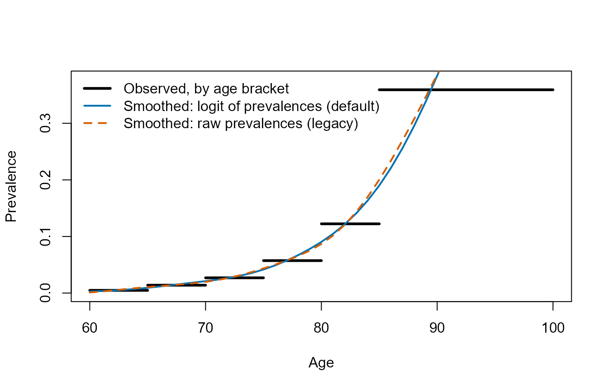
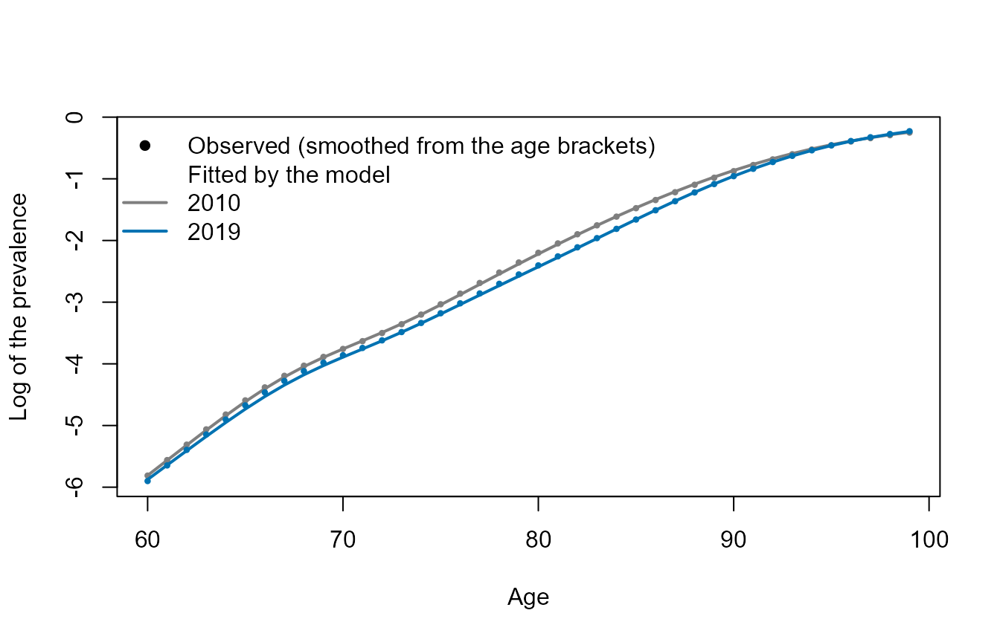
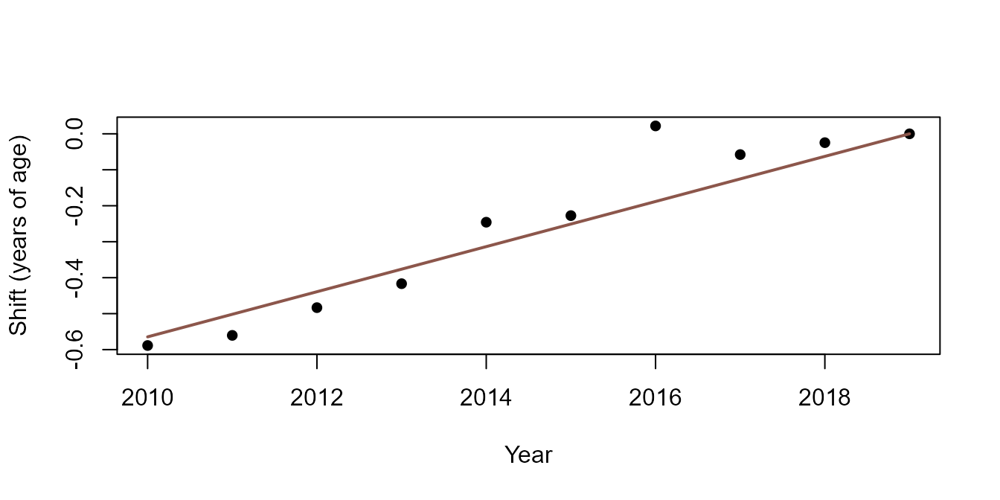
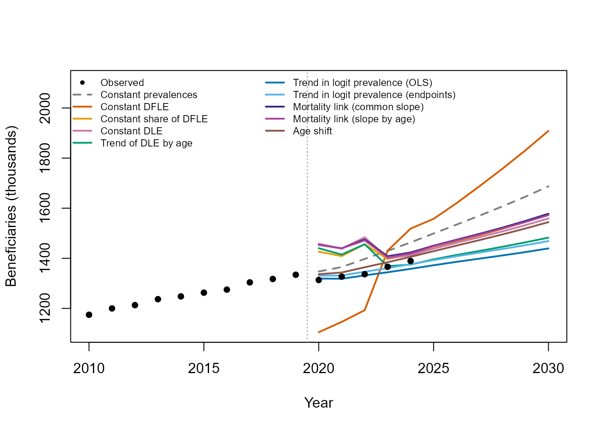
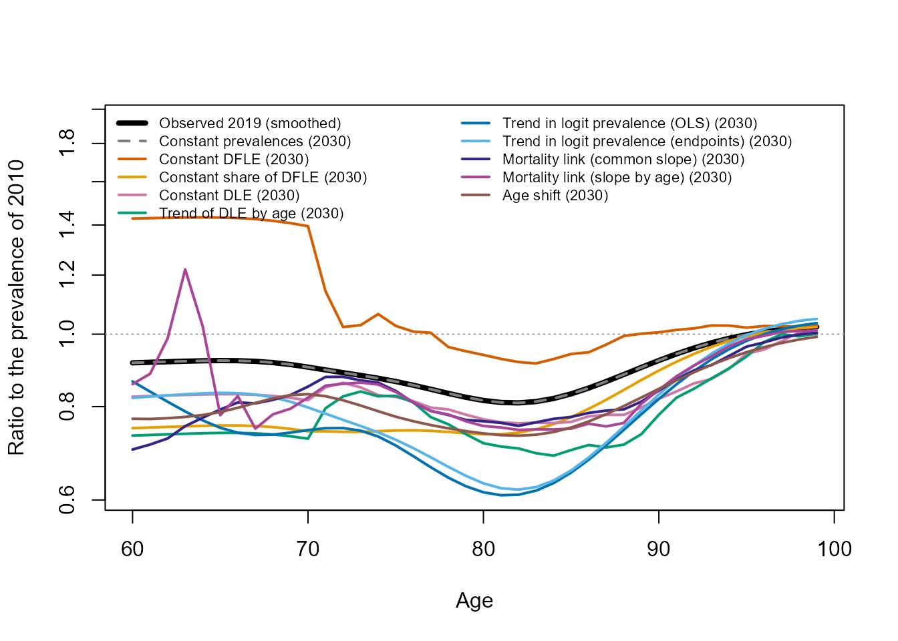
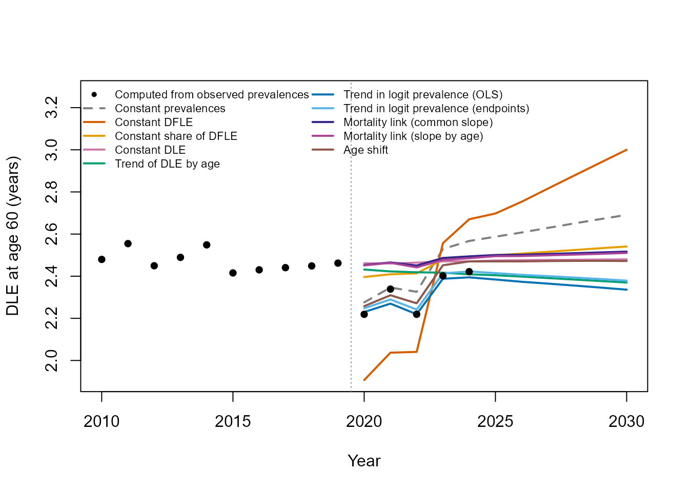
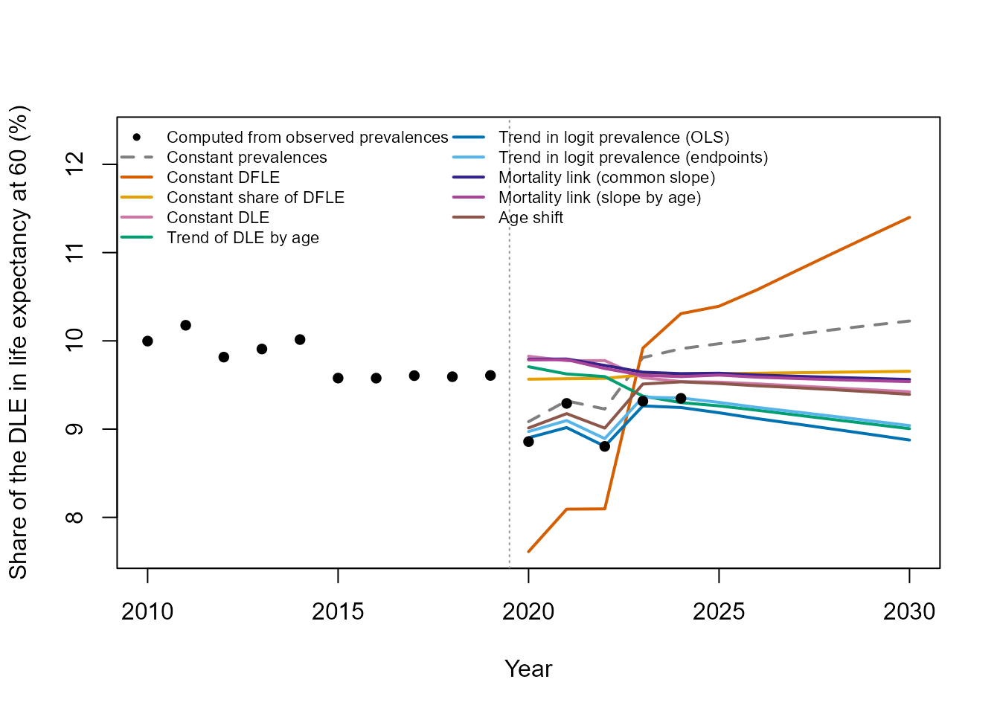

1. Purpose and scope
The package projects prevalences of disability by age, and then
calculates life expectancies with the Sullivan method. This vignette
describes the methods available in fitPrevalenceModel(),
predict() and projectPrevalence(), and
illustrates them on one example: the prevalence of the APA
(allocation personnalisée d’autonomie, the French benefit for
older people with long-term care needs).
The package implements a large number of conceivable methods, including some that turn out to be poorly suited to a realistic description of observed evolutions. Two examples are the uniform shift of the whole curve of prevalences by age (observed shifts are faster at some ages than at others), and the uniform evolution of the prevalences at all ages from the value at the minimum age. These methods are kept because they are simple, transparent benchmarks, and because their implications can be worked out exactly. The vignette describes the assumptions of each method; it does not single out a “best” method.
Two warnings apply to everything below.
- The APA is one example of disability indicator among others. What the example shows (which methods fit better, how large the differences between methods are) must not be read as general results: it can differ for other indicators, populations or periods.
- A projection is by nature an approximation. Projected and observed values are never expected to coincide, and the graphics below always show them as two distinct objects (observed values as points, modelled or projected values as lines).
Roadmap. Section 2 recalls the Sullivan method, which links prevalences and life expectancies. Section 3 prepares the data. Section 4 presents the four families of methods (A to D). Section 5 shows how to retrieve and plot the results of an estimation. Section 6 compares all methods on the APA example, with a retrospective test and projections to 2030. Section 7 lists points to keep in mind when using these methods and their results.
2. Common framework: the Sullivan method and its inversion
Notation. The age is and the year is . The prevalence of disability is (a proportion between 0 and 1) and the probability of death between age and is . In the formulas below, the year is dropped when it is not needed.
Three life expectancies at age are used throughout:
| Symbol | Meaning | Name in the package tables |
|---|---|---|
| total life expectancy | ex |
|
| disability life expectancy: expected number of years lived with disability (espérance de vie en incapacité, EVI, in French) | DLEx |
|
| disability-free life expectancy: expected number of years lived without disability (espérance de vie sans incapacité, EVSI, in French) | DFLEx |
They add up: . Two ratios are also used below: the share of years lived with disability, , and the ratio .
Life table. Starting from a number of survivors at age , with , the person-years lived between and are . At the last age of the table, with .
Sullivan method. Life expectancies are obtained by summing person-years over the ages above , with or without weighting by the prevalence:
Inversion. The method can be inverted: given mortality rates and a value of DLE at each age, the prevalence at age is
the second term being zero at the last age. A hypothesis on life expectancies is feasible if this gives at all ages. This inversion is the basis of the methods of family A (section 4).
3. Preparing the data
Prevalences by single year of age
Prevalences of the APA are available by age bracket
(FRAPAprevalence), using data released by Drees, i.e. the
statistical unit of the French Ministry in charge of social affairs.
Projection methods work on single years of age, so brackets are first
converted with ApproxPrevalenceTable(). The smoothing is
weighted by the population and, by default, minimises the second
differences of the logit of prevalences. With
option = "legacy", the smoothing (also weighted by the
population) minimises instead the second differences of the raw
prevalences. This alternative implicitly assumes that prevalences
are close to zero just before the minimum age, and therefore strongly
underestimates prevalences at the first ages; it is only shown below for
comparison.
Population weights. The population is taken from
FRInseePopulation, in which age and population are measured
on 1 January of each year (variable
age0101). The prevalences of the APA, like the mortality
rates used below, refer to the situation at the end of the
year. A person aged
on 1 January of year
is a person who had reached age
on 31 December of year
.
To be consistent with prevalences, the year of the population table is
therefore replaced by year - 1.
# 1. Prevalences of the APA by age bracket (6 brackets from 60 to 85 and over, years 2010 to 2024),
# expressed as proportions
apa <- FRAPAprevalence[FRAPAprevalence$decomp == 6,
c("year", "age", "prevalence")]
# 2. Population by single year of age, used as weights in the smoothing
pop <- FRInseePopulation[FRInseePopulation$geo == "france" &
FRInseePopulation$age0101 %in% 60:99, ]
# the table is measured on 1 January: the population on 1 January of year Y
# is the population at the end of year Y-1 (like prevalences and mortality rates)
pop$year <- pop$year - 1
# sum over sexes (age 99 means 99 and over)
pop <- aggregate(popx ~ year + age0101, data = pop, FUN = sum)
names(pop) <- c("year", "age", "popx")
# 3. Prevalences by single year of age, from 60 to 99
pix99 <- ApproxPrevalenceTable(apa,
agecuts = seq(60, 85, 5), # lower bounds of the brackets
agemin = 60,
agemax = 99,
weights.tab = pop,
categories = "year")
# keep the variables used below: year, age and pix (the prevalence)
pix99 <- data.frame(year = as.numeric(pix99$year),
age = pix99$age,
pix = pix99$prevalence.approx)Extending the prevalences to age 104
The Sullivan method needs a life table up to its last age. Here the life table stops at age 104, where . Prevalences after age 99 are not observed: they are set equal to the prevalence at age 99. These extended ages are only used to compute life expectancies. They are left out of the estimation of the models, and of the graphics.
# Copies the rows of the last observed age (99) for each age from 100 to 104
extend_ages <- function(x, from = 99, to = 104) {
# rows of the last observed age
last <- x[x$age == from, ]
# one copy of these rows for each extra age, with the age replaced
copies <- lapply((from + 1):to, function(a) transform(last, age = a))
# original table followed by the extra ages
rbind(x, do.call(rbind, copies))
}
pix104 <- extend_ages(pix99)Mortality rates
The table FRInseeMortalityForecast2026 contains
both the observed mortality rates and the Insee
projections (2026 projections, central scenario): it is
sufficient by itself and no other source of mortality rates is needed.
In this table, rates are observed until 2022 and projected from 2023
onwards, so the years 2023 and 2024 are already projections. Rates are
available up to age 104 (and beyond). The geographical scope is “France
excluding Mayotte” until 2013 and “France” from 2014 onwards: this small
approximation has no consequence for the example.
# Selection of the mortality rates: all sexes, ages 60 to 104, years 2010 to 2030
mort <- FRInseeMortalityForecast2026
mort <- mort[mort$sex == "all" &
mort$geo %in% c("France excluding Mayotte", "France") &
mort$def.age == "current age (approx)" &
mort$age %in% 60:104 &
mort$year %in% 2010:2030,
c("year", "age", "qx")]
# the last age of the life table (104) has a mortality rate of 1
mort$qx[mort$age == 104] <- 1
# mortality rates of the past (years of the estimation and of the tests)
mort_hist <- mort[mort$year %in% 2010:2024, ]
# mortality rates for the projection years
mort_proj <- mort[mort$year %in% 2020:2030, ]Projected population
The projected population is only used to convert projected
prevalences into numbers of beneficiaries. As above, it is measured on 1
January, so its year is replaced by year - 1.
pop_fc <- FRInseePopulationForecast2026
# all sexes, France, ages 60 and over, years 2020 to 2030 (end of year, see below)
pop_fc <- pop_fc[pop_fc$geo == "France" &
pop_fc$sex == "all" &
pop_fc$age0101 >= 60, ]
# measured on 1 January: year Y corresponds to the end of year Y-1
pop_fc$year <- pop_fc$year - 1
pop_fc <- pop_fc[pop_fc$year %in% 2020:2030, ]
# ages 99 and over are grouped, as in the prevalences
pop_fc$age <- pmin(pop_fc$age0101, 99)
pop_fc <- aggregate(popx0101 ~ year + age, data = pop_fc, FUN = sum)
names(pop_fc)[3] <- "popx"Observed and smoothed prevalences
The next figure compares, for 2019, the observed prevalences by age bracket (horizontal segments) with the two smoothing options (lines). Brackets are observed; single ages are modelled in both cases.
# smoothing of the raw prevalences (option "legacy"), for comparison
pix_leg <- ApproxPrevalenceTable(apa,
agecuts = seq(60, 85, 5),
agemin = 60,
agemax = 99,
weights.tab = pop,
categories = "year",
option = "legacy")
pix_leg <- data.frame(year = as.numeric(pix_leg$year),
age = pix_leg$age,
pix = pix_leg$prevalence.approx)
# observed prevalences by bracket in 2019
br <- apa[apa$year == 2019, ]
# empty plot, then one segment per bracket (the last bracket ends at age 100)
plot(NULL,
xlim = c(60, 100),
ylim = c(0, max(br$prevalence) * 1.05),
xlab = "Age",
ylab = "Prevalence")
segments(x0 = br$age, y0 = br$prevalence,
x1 = c(br$age[-1], 100), y1 = br$prevalence,
lwd = 3, col = "black")
# smoothed prevalences: logit of prevalences (default) and raw prevalences (option "legacy")
lines(pix99$age[pix99$year == 2019], pix99$pix[pix99$year == 2019],
col = "#0072B2", lwd = 2)
lines(pix_leg$age[pix_leg$year == 2019], pix_leg$pix[pix_leg$year == 2019],
col = "#D55E00", lwd = 2, lty = 2)
legend("topleft", bty = "n",
lwd = c(3, 2, 2), lty = c(1, 1, 2),
col = c("black", "#0072B2", "#D55E00"),
legend = c("Observed, by age bracket", "Smoothed: logit of prevalences (default)", "Smoothed: raw prevalences (legacy)"))
Prevalence of the APA in 2019: observed by age bracket and smoothed by single year of age.
4. The methods
All methods are estimated with fitPrevalenceModel() on
the years given by fit_years (and
exclude_years). Let
be the last year used for the estimation. predict() then
projects prevalences for any years, and projectPrevalence()
does both steps and adds the life expectancies.
The input table has the variables year, age
and pix (prevalence), plus qx for the methods
that use mortality ("mortality" and "target").
The tables used below are built from the data prepared in section 3.
# methods "trend" and "shift": prevalences only (ages 60 to 99)
tab_trend <- pix99
# method "mortality": prevalences and mortality rates (ages 60 to 99)
tab_mort <- merge(pix99,
mort_hist[mort_hist$age <= 99, ],
by = c("year", "age"))
# method "target": prevalences and mortality rates on the whole life table (ages 60 to 104)
tab_target <- merge(pix104,
mort_hist,
by = c("year", "age"))The fitted models of the examples below are named after their family
(m_A_..., m_B_..., m_C_...,
m_D_...), so that there is no ambiguity on the method
behind each of them.
Family A: hypotheses on life expectancies
(method = "target")
These methods do not extrapolate prevalences: they set a hypothesis
on a life-expectancy indicator, and prevalences are the ones that give
this indicator, given the projected mortality (inversion of the Sullivan
method, as in prevalenceForecast()). A hypothesis is made
of three choices: an indicator, a rule and a scope.
Indicator. The targeted value of DLE is deduced from the value of the indicator:
indicator |
meaning | targeted DLE |
|---|---|---|
"dle" |
DLE | |
"dfle" |
DFLE | |
"pct_dle" |
share of DLE in , in percent | |
"pct_dfle" |
share of DFLE in , in percent | |
"ratio" |
DFLE / DLE |
Rule. The value of the indicator in the projection years is
-
"constant": ; -
"trend": , estimated at each age on the years of the estimation (estimator = "ols"or"endpoints"); -
"horizon": the indicator changes bychangepercent between and the yearhorizon, linearly in between, ; afterwards the change goes on linearly or stops (after = "linear"or"constant").
A linear evolution of "pct_dle" and of
"pct_dfle" are equivalent hypotheses, since the two shares
add up to 100 percent. This is not the case for a relative change
("horizon").
Scope. Two scopes are available. Each of them has its own optional age argument, and the two arguments should not be confused.
- With
scope = "all_ages", the rule is applied at each age, and prevalences are obtained by inversion. The optional argumentfrom_agerestricts the hypothesis to the ages above a given age; younger ages then follow the evolution of the prevalence at this age (see the subsection on instability below). - With
scope = "min_age", the rule is applied at one age only, the anchor age , which is the minimum age by default or the age given byanchor_age. Prevalences of all ages evolve uniformly from those of , so that the targeted DLE is reached at the anchor age.from_ageis ignored with this scope.
With scope = "min_age", the uniform evolution takes one
of two forms, chosen with uniform_scale:
-
uniform_scale = "odds"(default): a common shift of the logit of prevalences, that is, the odds of all ages are multiplied by the same factor , and prevalences always remain between 0 and 1: -
uniform_scale = "level": prevalences of all ages are multiplied by the same factor , and bounded to 1:
How
(or
)
is determined. There is no estimation in the statistical sense:
the parameter is calculated separately for each projection year
.
Let
be the DLE at the anchor age given by the indicator and the rule in year
.
The parameter is the value for which the DLE at the anchor age, computed
by the Sullivan method with the mortality of year
and the prevalences above, is equal to this target:
The left-hand side increases with
(or
),
so the solution is unique when it exists, and it is found numerically
(with uniroot()). Only the ages above the anchor age enter
this equation, but the parameter is then applied to all ages, including
younger ones. If the target cannot be reached (for instance, a DLE
larger than the one obtained when all prevalences tend to 1), the
hypothesis is not feasible in year
.
Prevalences are then missing, or set to the closest feasible solution,
depending on the argument on_unfeasible of
predict() (see below).
This is a theoretical hypothesis: prevalences do not evolve in the same proportion at all ages.
# Hypothesis 1 (scope "all_ages"):
# the DLE follows its linear trend at each age, the hypothesis being applied from age 70
m_A_dle <- fitPrevalenceModel(tab_target,
method = "target",
indicator = "dle",
rule = "trend",
scope = "all_ages",
from_age = 70,
fit_years = 2010:2019)
m_A_dle
#> Model of prevalences by age, method "target"
#> Years used for the estimation: 2010 to 2019 (10 years)
#> Series: 1
#> Ages: 60 to 104
#> Indicator: dle ; rule: trend ; scope: all_ages
#> Applied from age 70 (younger ages follow the odds of this age)
#> Use coef(), as.data.frame(, what = ) and predict() to retrieve results and project prevalences.
# Hypothesis 2 (scope "min_age"):
# prevalences evolve uniformly at all ages (common shift of the logit), such that the DLE
# at the anchor age (here the minimum age, 60) follows its linear trend
m_A_uni <- fitPrevalenceModel(tab_target,
method = "target",
indicator = "dle",
rule = "trend",
scope = "min_age",
fit_years = 2010:2019)
m_A_uni
#> Model of prevalences by age, method "target"
#> Years used for the estimation: 2010 to 2019 (10 years)
#> Series: 1
#> Ages: 60 to 104
#> Indicator: dle ; rule: trend ; scope: min_age (age 60, odds scale)
#> Use coef(), as.data.frame(, what = ) and predict() to retrieve results and project prevalences.Instability at young ages and from_age
By inversion, the prevalence at age is the difference between two life expectancies of neighbouring ages, divided by . At the youngest ages, where prevalences are tiny, this difference is small and very sensitive to the hypothesis: a hypothesis that seems reasonable can require prevalences that collapse, or even negative prevalences (which are then not feasible). For example, consider a share of DLE in total life expectancy that decreases by 10 percent between 2019 and 2030. The code below fits this hypothesis twice, applied at all ages and applied from age 70 only, and displays the prevalences in 2030 before any correction, next to the smoothed prevalences observed in 2019.
# Hypothesis applied at all ages
m_A_all <- fitPrevalenceModel(tab_target,
method = "target",
indicator = "pct_dle",
rule = "horizon",
change = -10,
horizon = 2030,
fit_years = 2010:2019)
# Same hypothesis, applied from age 70 only
m_A_70 <- fitPrevalenceModel(tab_target,
method = "target",
indicator = "pct_dle",
rule = "horizon",
change = -10,
horizon = 2030,
from_age = 70,
fit_years = 2010:2019)
# Mortality of the projection year
nd <- mort_proj[mort_proj$year == 2030, ]
# Prevalences as they come out of the inversion (on_unfeasible = "warn" does not correct them)
raw_all <- predict(m_A_all, nd, on_unfeasible = "warn")
raw_70 <- predict(m_A_70, nd, on_unfeasible = "warn")
# Comparison at a few ages, in percent
ages_shown <- c(60, 62, 65, 70, 80)
# smoothed prevalences observed in 2019, for reference
obs_2019 <- pix99[pix99$year == 2019, ]
data.frame(age = ages_shown,
observed_2019 = round(100 * obs_2019$pix[match(ages_shown, obs_2019$age)], 2),
all_ages = round(100 * raw_all$pix[match(ages_shown, raw_all$age)], 2),
from_age_70 = round(100 * raw_70$pix[match(ages_shown, raw_70$age)], 2))
#> age observed_2019 all_ages from_age_70
#> 1 60 0.27 0.02 0.20
#> 2 62 0.45 0.17 0.33
#> 3 65 0.93 0.58 0.69
#> 4 70 2.11 1.56 1.56
#> 5 80 9.04 7.33 7.33The table gives prevalences in percent: observed in 2019, and in 2030
under the two versions of the hypothesis. When the hypothesis is applied
at all ages, the prevalence at age 60 is divided by more than ten, which
is not a plausible consequence of a 10 percent decrease of the share of
DLE: this is the instability of the inversion at young ages. With
from_age = 70, the hypothesis is only applied from age 70,
and younger ages follow the evolution of the odds at age 70:
where
is the age given by from_age.
The hypothesis is then no longer satisfied below
from_age. The choice of from_age is a
modelling choice, not a technical detail: it changes the projected
number of beneficiaries. predict() has an argument
on_unfeasible for the cases where a hypothesis cannot be
satisfied: "warn" (default) returns the values as they are
with a warning, "clip" bounds prevalences to the interval 0
to 1 (with a warning), and "error" stops.
The same hypotheses are available, for a single reference year and
without estimation, in prevalenceForecast()
(cstDFLE, cstDLE, cstPreval,
cstPctDFLE, cstPctDLE).
Family B: trend of prevalences (method = "trend")
Prevalences are extrapolated at each age separately:
where
is the logit (default), the log or the identity (scale).
With estimator = "ols", coefficients are estimated by
ordinary least squares on all the years of the estimation; with
"endpoints", the slope is calculated from the first and
last years only (the line then goes through the first and last
observations).
Two features should be kept in mind. First,
is the fitted value at
,
not the observation: with OLS, the projection does not start from the
last observed prevalence. Second, a linear trend of the logit
extrapolated far beyond the years of the estimation can produce
evolutions that become implausible; predict() warns when
the horizon is more than twice the length of the estimation period.
# Default options: logit scale, ordinary least squares, estimation on 2010-2019
m_B_trend <- fitPrevalenceModel(tab_trend,
method = "trend",
fit_years = 2010:2019)
summary(m_B_trend)
#> Model of prevalences by age, method "trend" (scale: logit)
#> Years used for the estimation: 2010 to 2019
#>
#> Fit statistics by series (sigma: residual standard deviation on the scale of the estimation):
#> n_obs n_ages n_years sigma r2
#> 400 40 10 0.0299 0.7786Family C: link with mortality
(method = "mortality")
If disability occurs on average years before death, a decrease of mortality at age should translate into a decrease of the prevalence at age :
The intercepts
are specific to each age. The slope
is common to all ages (slope = "common"), estimated by
with
and
,
or specific to each age (slope = "by_age", more flexible
but noisier). The age shift
is given by age_lag, not necessarily an integer
(
is interpolated linearly between ages). If age_lag is a
vector, the value that minimises the sum of squared residuals is
retained. This is a descriptive criterion, not a statistical test.
Beyond the last age of the table, the mortality rate of the last age is
used; since the estimation here is restricted to ages 60 to 99, this
means
for
.
# Several values of the age shift k are tried; the one with the smallest
# sum of squared residuals is retained
m_C_mort <- fitPrevalenceModel(tab_mort,
method = "mortality",
fit_years = 2010:2019,
age_lag = seq(0, 6, by = 0.5))
summary(m_C_mort)
#> Model of prevalences by age, method "mortality" (scale: logit)
#> Years used for the estimation: 2010 to 2019
#> Age shift k: 0.5
#>
#> Slope on ln(q):
#> estimate std.error
#> 1.298 0.05908
#>
#> Fit statistics by series (sigma: residual standard deviation on the scale of the estimation):
#> n_obs n_ages n_years sigma r2
#> 400 40 10 0.03918 0.5736
# criterion for each value of k
lag <- as.data.frame(m_C_mort, what = "lag_search")
lag
#> age_lag rss selected
#> 1 0.0 0.5556559 FALSE
#> 2 0.5 0.5509588 TRUE
#> 3 1.0 0.5700958 FALSE
#> 4 1.5 0.5711340 FALSE
#> 5 2.0 0.5942275 FALSE
#> 6 2.5 0.6018504 FALSE
#> 7 3.0 0.6290063 FALSE
#> 8 3.5 0.6403072 FALSE
#> 9 4.0 0.6692586 FALSE
#> 10 4.5 0.6835003 FALSE
#> 11 5.0 0.7134384 FALSE
#> 12 5.5 0.7298297 FALSE
#> 13 6.0 0.7597923 FALSE
plot(lag$age_lag, lag$rss,
type = "b",
xlab = "Age shift k (years of age)",
ylab = "Sum of squared residuals")
# highlight the retained value
points(lag$age_lag[lag$selected], lag$rss[lag$selected],
pch = 16, col = "#D55E00", cex = 1.5)Sum of squared residuals according to the age shift k (the retained value is in orange).
The age shift is weakly identified. Suppose that (mortality is log-linear in age, as in a Gompertz model). Then and, once the age mean is removed in the estimator above, does not depend on : the shift is absorbed by the age intercepts . can then only be identified from the departures of mortality from this form, that is, from changes in the shape of the mortality curve with time. When the criterion above is nearly flat, this is a sign of weak identification, and the selected should not be interpreted as a measure of the delay between disability and death.
Family D: shift of the curve of prevalences
(method = "shift")
The curve of prevalences by age of the reference year moves towards older ages at a constant speed (in years of age per calendar year):
For each year of the estimation, the shift that brings the curve of closest to the curve of is searched (least squares on the logit):
and
is the slope of the regression of
on
without an intercept,
.
Values between ages are interpolated linearly on the logit scale, and
the curve is extrapolated linearly beyond the first and last ages, using
the slope estimated on the n_extrap first (or last)
ages.
A single speed is assumed for all ages, whereas observed shifts are usually faster at some ages than at others. The method can therefore be a poor representation of observed evolutions.
m_D_shift <- fitPrevalenceModel(tab_trend,
method = "shift",
fit_years = 2010:2019)
# estimated speed of the shift (years of age per calendar year)
coef(m_D_shift)
#> age term estimate std.error n
#> 1 NA shift 0.06272838 0.005254184 95. Retrieving the results of an estimation
A fitted model is an object of class prevalence_model.
Its results are available with the usual methods. The examples of this
section use the model m_B_trend fitted in section 4, that
is, the method method = "trend" of family
B (extrapolation of the logit of prevalences by age, ordinary
least squares, estimation on 2010-2019). It should not be confused with
the rule rule = "trend" of the method "target"
(family A), which extrapolates a life-expectancy indicator and not
prevalences.
# coefficients, long format: one row per age and term
head(coef(m_B_trend))
#> age term estimate std.error n
#> 1 60 intercept -5.873507 0.02830858 10
#> 2 61 intercept -5.638418 0.02493985 10
#> 3 62 intercept -5.403988 0.02292792 10
#> 4 63 intercept -5.171691 0.02251156 10
#> 5 64 intercept -4.944026 0.02341107 10
#> 6 65 intercept -4.724768 0.02478912 10
# observed and fitted prevalences, and residuals
head(as.data.frame(m_B_trend, what = "fitted"))
#> year age pix pix_fit resid
#> 1 2010 60 0.002991059 0.002997988 -0.002320875
#> 2 2010 61 0.003846648 0.003834305 0.003226191
#> 3 2010 62 0.004941532 0.004899141 0.008658145
#> 4 2010 63 0.006328417 0.006242662 0.013729751
#> 5 2010 64 0.008052231 0.007909492 0.018029478
#> 6 2010 65 0.010127897 0.009919964 0.020954419
# residuals, on the scale of the estimation (here the logit)
summary(residuals(m_B_trend))
#> Min. 1st Qu. Median Mean 3rd Qu. Max.
#> -0.0841188 -0.0139632 0.0005312 0.0000000 0.0155908 0.0769845
# residual standard deviation, R-squared
as.data.frame(m_B_trend, what = "fit_stats")
#> n_obs n_ages n_years sigma r2
#> 1 400 40 10 0.02989739 0.7786101as.data.frame() also returns "observed",
and, for some methods, "lag_search" (method
"mortality" with several values of age_lag) or
"shifts" (method "shift"). These tables can be
used directly to draw graphics. In all graphics, observed and fitted (or
projected) values are drawn as separate objects.
The next figure shows the prevalences by age on a logarithmic scale. Prevalences increase roughly exponentially with age, so on this scale the curves are close to straight lines and the differences between years are visible at all ages, including the young ages where prevalences are very low.
# Draws, for a few years, observed values (points) and fitted values (lines) of log(prevalence)
plot_fit <- function(model, years, cols, main = "") {
# table with observed prevalences (pix) and fitted prevalences (pix_fit)
f <- as.data.frame(model, what = "fitted")
# range of the vertical axis, on the log scale
ylim <- range(log(c(f$pix, f$pix_fit)), na.rm = TRUE)
plot(NULL,
xlim = range(f$age),
ylim = ylim,
xlab = "Age",
ylab = "Log of the prevalence",
main = main)
# one colour per year
for (i in seq_along(years)) {
d <- f[f$year == years[i], ]
points(d$age, log(d$pix), pch = 16, cex = 0.6, col = cols[i])
lines( d$age, log(d$pix_fit), lwd = 2, col = cols[i])
}
legend("topleft", bty = "n",
pch = c(16, NA, NA, NA), lty = c(NA, 1, 1, 1), lwd = c(NA, 2, 2, 2),
col = c("black", "white", cols),
legend = c("Observed (smoothed from the age brackets)",
"Fitted by the model",
years))
}
plot_fit(m_B_trend, years = c(2010, 2019), cols = c("#7F7F7F", "#0072B2"))
Logarithm of the prevalence of the APA by age, observed (points) and fitted by the trend in logit prevalence of family B (lines), for the first and the last year of the estimation.
For method "shift" (family D), the shifts
are measured relative to the reference year, and are therefore negative
before it (and zero at
):
sh <- as.data.frame(m_D_shift, what = "shifts")
plot(sh$year, sh$shift_obs,
pch = 16,
xlab = "Year",
ylab = "Shift (years of age)")
lines(sh$year, sh$shift_fit, lwd = 2, col = "#8C564B")
Shift of the curve of prevalences relative to the last year of the estimation: estimated for each year (points) and predicted by the model (line).
The estimated speed of the shift is 0.063 years of age per year, that is 0.75 months per year.
predict() can also return a prediction interval
(interval = TRUE, for method "trend" with OLS
and for method "mortality"). This interval should
not be given too much weight. It only reflects the statistical
error of the regression on the years of the estimation. It ignores the
uncertainty on projected mortality, the error of measurement of
prevalences, the fact that single-age prevalences are themselves
smoothed from a small number of age brackets (so that the effective
number of independent observations is smaller than the number of ages),
and the uncertainty on whether the model remains valid outside the
period of estimation.
6. Comparing methods on the APA
Methods compared
The following specifications are used in the rest of the vignette.
Colours are fixed by method in all graphics. For methods of family A,
the hypothesis is applied from age 70 (from_age = 70). For
the mortality link, the age shift is set to 0 (since it is poorly
identified here). Prevalences held constant at their value of the last
year of the estimation are added as a benchmark.
Each specification has a label (used in graphics), a method, a
colour, a line type and the arguments passed to
fitPrevalenceModel().
specs <- list(
# benchmark: no change in prevalences
constant = list(label = "Constant prevalences",
method = "constant",
col = "#7F7F7F", lty = 2),
# family A: hypotheses on life expectancies, applied from age 70
dfle_cst = list(label = "Constant DFLE",
method = "target",
col = "#D55E00", lty = 1,
args = list(indicator = "dfle", rule = "constant", from_age = 70)),
pctdfle_cst = list(label = "Constant share of DFLE",
method = "target",
col = "#E69F00", lty = 1,
args = list(indicator = "pct_dfle", rule = "constant", from_age = 70)),
dle_cst = list(label = "Constant DLE",
method = "target",
col = "#CC79A7", lty = 1,
args = list(indicator = "dle", rule = "constant", from_age = 70)),
dle_trend = list(label = "Trend of DLE by age",
method = "target",
col = "#009E73", lty = 1,
args = list(indicator = "dle", rule = "trend", from_age = 70)),
# family B: trend in the logit of prevalences
trend_ols = list(label = "Trend in logit prevalence (OLS)",
method = "trend",
col = "#0072B2", lty = 1,
args = list(estimator = "ols")),
trend_end = list(label = "Trend in logit prevalence (endpoints)",
method = "trend",
col = "#56B4E9", lty = 1,
args = list(estimator = "endpoints")),
# family C: link with mortality (age shift k set to 0)
mort_common = list(label = "Mortality link (common slope)",
method = "mortality",
col = "#332288", lty = 1,
args = list(slope = "common")),
mort_byage = list(label = "Mortality link (slope by age)",
method = "mortality",
col = "#AA4499", lty = 1,
args = list(slope = "by_age")),
# family D: shift of the curve of prevalences
shift = list(label = "Age shift",
method = "shift",
col = "#8C564B", lty = 1)
)Three helper functions are used to apply a specification to the data.
# Prevalences by age (60 to 104) projected with one specification.
# spec : one element of `specs`
# fit_years : years used for the estimation
# new_mort : table (year, age, qx) with the mortality of the projection years
# Ages 100 to 104 are only used to compute life expectancies.
predict_pix <- function(spec, fit_years, new_mort) {
years <- sort(unique(new_mort$year))
# Benchmark: the prevalences of the last year of the estimation, repeated for each year
if (spec$method == "constant") {
last <- pix99[pix99$year == max(fit_years), c("age", "pix")]
p <- do.call(rbind, lapply(years, function(y) data.frame(year = y, last)))
return(extend_ages(p))
}
# Table used for the estimation, which depends on the method
tab <- switch(spec$method,
target = tab_target,
mortality = tab_mort,
tab_trend)
# Estimation (warnings on the short estimation period are not displayed)
model <- suppressWarnings(
do.call(fitPrevalenceModel,
c(list(tab = tab, method = spec$method, fit_years = fit_years), spec$args))
)
# Mortality of the projection years: the method "target" works on the whole life table
# (60 to 104), the other methods on ages 60 to 99
if (spec$method == "target") {
newdata <- new_mort
} else {
newdata <- new_mort[new_mort$age <= 99, ]
}
# Projection; prevalences outside the interval 0 to 1 are bounded
p <- suppressWarnings(predict(model, newdata, on_unfeasible = "clip"))
p <- p[, c("year", "age", "pix")]
# Extension to ages 100-104, except for "target" which already covers them
if (spec$method != "target") {
p <- extend_ages(p)
}
p
}
# Life expectancies (Sullivan method) from projected prevalences and mortality
with_le <- function(p, new_mort) {
p <- merge(p[, c("year", "age", "pix")], new_mort, by = c("year", "age"))
CompleteDFLEtable(p)
}
# Number of beneficiaries by year: sum over ages 60 to 99 of prevalence times population
# p : projected prevalences (year, age, pix)
# popt : population (year, age, popx)
count_beneficiaries <- function(p, popt) {
m <- merge(p[p$age <= 99, c("year", "age", "pix")],
popt,
by = c("year", "age"))
tapply(m$pix * m$popx, m$year, sum)
}Warnings of fitPrevalenceModel() and
predict() (short estimation period, prevalences outside the
interval 0 to 1 bounded with on_unfeasible = "clip") are
not displayed in the comparison.
A retrospective test
The test estimates each method on a past period, projects a later
year with the mortality of this year taken from
FRInseeMortalityForecast2026 (so that the evaluation
concerns prevalences, not projected mortality), and compares the
projections with the observed prevalences. Two tests are made:
- values of 2019, projected from an estimation on 2010-2016 (3 years after the end of the estimation);
- values of 2024, projected from an estimation on 2010-2019 (5 years after the end of the estimation). This is the same estimation as for the projections to 2030 below. The years of the Covid-19 epidemic (2020-2021) are not used in the estimation, and 2024 is considered as far enough from the epidemic for its consequences on prevalences to have passed.
Prevalences projected by single year of age are aggregated into the
age brackets of FRAPAprevalence (weighted by the
population), and compared to the observed prevalences of the brackets.
Two indicators are reported for each test:
- the error on the total number of beneficiaries (projected prevalence by bracket times the population of the bracket, summed over brackets), in percent of the observed number;
- the mean absolute relative error on prevalences by bracket, in percent.
# lower bounds of the age brackets, and observed data by bracket
bands <- seq(60, 85, 5)
obs_bands <- FRAPAprevalence[FRAPAprevalence$decomp == 6,
c("year", "age", "nb", "pop", "prevalence")]
names(obs_bands)[2] <- "band"
# Errors of all the specifications for one choice of estimation years and evaluation years
backtest <- function(specs, fit_years, eval_years) {
# observed mortality of the evaluation years
new_mort <- mort_hist[mort_hist$year %in% eval_years, ]
out <- lapply(specs, function(spec) {
# 1. projection by single year of age
p <- predict_pix(spec, fit_years, new_mort)
# 2. aggregation into age brackets, weighted by the population (ages 60 to 99 only)
d <- merge(p, pop, by = c("year", "age"))
d$band <- bands[findInterval(d$age, bands)]
d$w <- d$pix * d$popx # number of beneficiaries by single age
b <- aggregate(cbind(w, popx) ~ year + band, data = d, FUN = sum)
b$prev <- b$w / b$popx # projected prevalence of the bracket
# 3. comparison with the observed data
b <- merge(b, obs_bands, by = c("year", "band"))
b$pred_nb <- b$prev * b$pop # projected number of beneficiaries
tot <- aggregate(cbind(pred_nb, nb) ~ year, data = b, FUN = sum)
data.frame(method = spec$label,
error_nb = mean(100 * (tot$pred_nb / tot$nb - 1)),
error_bands = mean(100 * abs(b$prev / b$prevalence - 1)))
})
do.call(rbind, out)
}
# Two tests: 2019 projected from 2010-2016, and 2024 projected from 2010-2019
bt1 <- backtest(specs, fit_years = 2010:2016, eval_years = 2019)
bt2 <- backtest(specs, fit_years = 2010:2019, eval_years = 2024)
# Table of results
bt <- data.frame(Method = bt1$method,
nb_1 = bt1$error_nb, bands_1 = bt1$error_bands,
nb_2 = bt2$error_nb, bands_2 = bt2$error_bands)
names(bt) <- c("Method",
"Number, 2019 (% error)", "Brackets, 2019 (% abs. error)",
"Number, 2024 (% error)", "Brackets, 2024 (% abs. error)")
knitr::kable(bt, digits = 1, row.names = FALSE,
caption = "Errors of projection (percent). 2019: estimation on 2010-2016; 2024: estimation on 2010-2019. Number: relative error on the number of beneficiaries (projected / observed - 1); a positive value means that the projection overestimates the observed number. Brackets: mean absolute relative error on prevalences by age bracket.")| Method | Number, 2019 (% error) | Brackets, 2019 (% abs. error) | Number, 2024 (% error) | Brackets, 2024 (% abs. error) |
|---|---|---|---|---|
| Constant prevalences | 1.9 | 3.6 | 5.3 | 4.9 |
| Constant DFLE | 9.0 | 12.4 | 9.3 | 12.2 |
| Constant share of DFLE | -0.6 | 7.8 | 1.8 | 7.9 |
| Constant DLE | -1.5 | 5.0 | 1.6 | 2.4 |
| Trend of DLE by age | -2.3 | 4.4 | -1.0 | 4.7 |
| Trend in logit prevalence (OLS) | -2.1 | 4.9 | -2.3 | 10.0 |
| Trend in logit prevalence (endpoints) | -2.7 | 7.9 | -0.9 | 7.6 |
| Mortality link (common slope) | 2.1 | 1.9 | 2.5 | 4.4 |
| Mortality link (slope by age) | 1.6 | 2.2 | 2.1 | 2.5 |
| Age shift | -2.7 | 6.8 | 1.2 | 6.0 |
How to read this table:
- The test is short: one year of evaluation for each test, for a single series, and on observations that include a possible change in the series around 2016 (see the shifts above). Differences of one or two percent between methods are of the same order as the noise in the observations.
- The benchmark of constant prevalences is informative. A method is only useful, in this test, if it does better than this benchmark.
- The two tests are not independent: the estimation period of the second one includes that of the first one. Comparing them shows whether the ranking of methods depends on the period, but nothing in them is a general result: with another indicator or another period, the ranking of methods can differ.
- Mortality rates are observed until 2022 in
FRInseeMortalityForecast2026. The mortality used for 2019 is therefore observed, but the mortality used for 2024 is already the Insee projection: for methods that use mortality (families A and C), the second test also includes a (small) error on mortality. - Methods of family A that apply a hypothesis at each age by inversion
are sensitive to the choice of
from_age.
Projections to 2030
The same specifications are now estimated on 2010-2019 and used to project prevalences up to 2030, with the Insee projected mortality (2026 projections, central scenario). Estimating on 2010-2019 leaves out the Covid-19 years: the years 2020 to 2024 are therefore projected by the methods, and can be compared with what was observed. The number of beneficiaries uses the projected population of Insee.
# Prevalences projected by each specification, years 2020 to 2030
proj <- lapply(specs, predict_pix, fit_years = 2010:2019, new_mort = mort_proj)
# Number of beneficiaries: years in rows, methods in columns
counts <- sapply(proj, count_beneficiaries, popt = pop_fc)
# Observed number of beneficiaries (all ages, from FRAPAprevalence)
obs_count <- aggregate(nb ~ year, data = FRAPAprevalence[FRAPAprevalence$decomp == 6, ], FUN = sum)
# Life expectancy at age 60 (DLE, and its share in total life expectancy),
# projected by each method...
le_at_60 <- function(p, new_mort) {
d <- with_le(p, new_mort)
d <- d[d$age == 60, ]
data.frame(year = d$year, DLE = d$DLEx, share = 100 * d$DLEx / d$ex)
}
le_proj <- lapply(proj, le_at_60, new_mort = mort_proj)
# ... and computed for the past from the smoothed observed prevalences
le_obs <- le_at_60(pix104, mort_hist)Observed number of beneficiaries in 2024: 1,389 thousands. Numbers projected for 2024 by the methods (2024 is a projection year, since the estimation stops in 2019) range from 1,358 to 1,518 thousands.
All the figures below use the same conventions. Black points are observed values, coloured lines are values projected by each method (the colour of a method is the same in all figures), and the dotted vertical line marks the end of the estimation period (2019). Projections for 2020-2022 use the mortality actually observed in these years, which was affected by the Covid-19 epidemic: this explains the temporary dip visible in the projected curves, which is a feature of mortality and not of the methods.
A small function draws the three figures that show a quantity by year.
# Draws one line per method (projected values) and black points (observed values).
# series : list of data frames (year, value), one per specification (same names as `specs`)
# obs : data frame (year, value) with the observed values
# ylab : label of the vertical axis
# obs_label : label of the observed values in the legend
plot_by_year <- function(series, obs, ylab, obs_label = "Observed", legend_pos = "topleft") {
# common range of the vertical axis
values <- c(unlist(lapply(series, function(s) s$value)), obs$value)
# some headroom above the data, so that the legend does not hide the lines
r <- range(values, na.rm = TRUE)
r[2] <- r[2] + 0.25 * (r[2] - r[1])
plot(NULL,
xlim = c(2010, 2030),
ylim = r,
xlab = "Year",
ylab = ylab)
# projected values, one line per method
for (id in names(series)) {
lines(series[[id]]$year, series[[id]]$value,
col = specs[[id]]$col, lty = specs[[id]]$lty, lwd = 2)
}
# end of the estimation period, and observed values
abline(v = 2019.5, lty = 3, col = "grey60")
points(obs$year, obs$value, pch = 16)
legend(legend_pos, bty = "n", cex = 0.7, ncol = 2,
legend = c(obs_label, sapply(specs, function(s) s$label)),
pch = c(16, rep(NA, length(specs))),
lty = c(NA, sapply(specs, function(s) s$lty)),
col = c("black", sapply(specs, function(s) s$col)),
lwd = c(NA, rep(2, length(specs))))
}Number of beneficiaries
yrs <- as.numeric(rownames(counts))
counts_series <- lapply(colnames(counts), function(id) {
data.frame(year = yrs, value = counts[, id] / 1000)
})
names(counts_series) <- colnames(counts)
plot_by_year(counts_series,
obs = data.frame(year = obs_count$year, value = obs_count$nb / 1000),
ylab = "Beneficiaries (thousands)")
Number of beneficiaries of the APA (thousands): observed (black points) and projected by each method (lines).
Prevalences by age
Prevalences are multiplied by about 100 between age 60 and age 99. Drawn on their own, even on a logarithmic scale, the curves of the different methods are therefore close to each other and their differences are hard to see. The next figure shows instead, at each age, the ratio of the projected prevalence in 2030 to the (smoothed) observed prevalence of 2010, the first year of the estimation. The thick black line gives the same ratio for the (smoothed) observed prevalences of 2019, the last year of the estimation: it shows the evolution actually observed over the estimation period, to which the projections can be compared. A ratio of 1 means no change since 2010; the vertical axis is logarithmic, so that a multiplication and a division by the same factor are at the same distance from 1. The ratio of constant prevalences is the ratio of 2019, so its line coincides with the black line. Prevalences equal to zero (which may occur at the youngest ages, when a hypothesis of family A is bounded to the interval 0 to 1) cannot be shown on a logarithmic scale and are left out of the lines.
# Reference: smoothed prevalences of 2010
ref <- pix99[pix99$year == 2010, c("age", "pix")]
names(ref)[2] <- "pix_ref"
# Ratio to the reference, for the projection year 2030 and for each method (ages 60 to 99);
# zeros are replaced by missing values, which are not drawn
ratios <- lapply(proj, function(d) {
d <- merge(d[d$year == 2030 & d$age <= 99, ], ref, by = "age")
d$ratio <- ifelse(d$pix > 0, d$pix / d$pix_ref, NA)
d[order(d$age), ]
})
# Same ratio for the observed prevalences of 2019
obs19 <- merge(pix99[pix99$year == 2019, ], ref, by = "age")
obs19$ratio <- obs19$pix / obs19$pix_ref
# range of the vertical axis, with some headroom for the legend
ylim <- range(c(obs19$ratio, unlist(lapply(ratios, function(d) d$ratio))), na.rm = TRUE)
ylim[2] <- ylim[2] * (ylim[2] / ylim[1])^0.35
plot(NULL,
xlim = c(60, 99),
ylim = ylim,
log = "y",
xlab = "Age",
ylab = "Ratio to the prevalence of 2010")
abline(h = 1, lty = 3, col = "grey60")
lines(obs19$age, obs19$ratio, lwd = 4, col = "black")
for (id in names(specs)) {
lines(ratios[[id]]$age, ratios[[id]]$ratio,
col = specs[[id]]$col, lty = specs[[id]]$lty, lwd = 2)
}
legend("topleft", bty = "n", cex = 0.7, ncol = 2,
lwd = c(4, rep(2, length(specs))),
lty = c(1, sapply(specs, function(s) s$lty)),
col = c("black", sapply(specs, function(s) s$col)),
legend = c("Observed 2019 (smoothed)", paste(sapply(specs, function(s) s$label), "(2030)")))
Ratio of the projected prevalence in 2030 to the observed prevalence of 2010, by age and method, and ratio of the observed prevalence of 2019 to that of 2010 (prevalences smoothed by single year of age; logarithmic scale).
Life expectancy with disability (DLE)
The next two figures show the Sullivan life expectancies at age 60, year by year. The first one gives the DLE, that is, the number of years that a person aged 60 is expected to live with the APA. The second one gives the share of the DLE in the total life expectancy at 60, . Observed points are computed from the smoothed observed prevalences and the Insee mortality: they include the years 2020-2021 of the Covid-19 epidemic.
dle_series <- lapply(le_proj, function(d) data.frame(year = d$year, value = d$DLE))
plot_by_year(dle_series,
obs = data.frame(year = le_obs$year, value = le_obs$DLE),
ylab = "DLE at age 60 (years)",
obs_label = "Computed from observed prevalences")
Life expectancy with the APA (DLE) at age 60, in years: computed from observed prevalences (black points) and projected by each method (lines).
share_series <- lapply(le_proj, function(d) data.frame(year = d$year, value = d$share))
plot_by_year(share_series,
obs = data.frame(year = le_obs$year, value = le_obs$share),
ylab = "Share of the DLE in life expectancy at 60 (%)",
obs_label = "Computed from observed prevalences")
Share of the DLE in total life expectancy at age 60, in percent: computed from observed prevalences (black points) and projected by each method (lines).
Summary table for 2030
res30 <- do.call(rbind, lapply(names(specs), function(id) {
# life expectancies at age 60 in 2030
d <- le_proj[[id]]
d <- d[d$year == 2030, ]
data.frame(Method = specs[[id]]$label,
Beneficiaries = round(counts["2030", id] / 1000),
DLE_60 = d$DLE,
Share_DLE_60 = d$share)
}))
names(res30) <- c("Method",
"Beneficiaries 2030 (thousands)",
"DLE at 60 (years)",
"Share of DLE at 60 (%)")
knitr::kable(res30, digits = c(0, 0, 2, 1), row.names = FALSE,
caption = "Projections for 2030 (estimation on 2010-2019).")| Method | Beneficiaries 2030 (thousands) | DLE at 60 (years) | Share of DLE at 60 (%) |
|---|---|---|---|
| Constant prevalences | 1687 | 2.69 | 10.2 |
| Constant DFLE | 1909 | 3.00 | 11.4 |
| Constant share of DFLE | 1576 | 2.54 | 9.7 |
| Constant DLE | 1559 | 2.48 | 9.4 |
| Trend of DLE by age | 1482 | 2.37 | 9.0 |
| Trend in logit prevalence (OLS) | 1439 | 2.34 | 8.9 |
| Trend in logit prevalence (endpoints) | 1468 | 2.38 | 9.0 |
| Mortality link (common slope) | 1578 | 2.52 | 9.6 |
| Mortality link (slope by age) | 1572 | 2.51 | 9.5 |
| Age shift | 1544 | 2.47 | 9.4 |
7. Points to keep in mind
- Several methods give similar results on the recent past, and none of them is “the right one”. Spreads between methods in the projections to 2030 mostly reflect different assumptions on whether the past evolution continues, which the short past period cannot settle. It is more useful to present a range of projections than a single figure.
- Hypotheses with a constant DFLE are mathematically coherent, but unrealistic when life expectancy increases: all the gain in life expectancy is then spent with disability. In this example, this gives by far the highest projection of the number of beneficiaries.
- Targets by inversion are unstable at the ages where prevalences are
tiny.
from_ageis a modelling choice, and its value matters for the result. - The uniform shift of the curve and the uniform evolution of all prevalences are theoretical cases.
- Prediction intervals only reflect the statistical uncertainty of the regressions, not projected mortality, nor the other sources of error.
- All that was observed here concerns one indicator (the APA, all levels of loss of autonomy (GIR 1 to 4), all places of residence) in France, on a short period. These are illustrations of how the methods work, not general results.